[Java] 34. WindowでMariaDBをインストールする方法
こんにちは。明月です。
この投稿はWindowでMariaDBをインストールする方法に関する説明です。
我々がプロジェクトを設計してプログラムを作成することで一番よく使うプログラムはデータベースです。
データベースの種類はすごく多いですが、その中で無料でパフォーマンスがいいし、RDBMS系のデータベースのMariaDBがあります。
MariaDBの特徴に関して説明するとOracleとMSSｑｌ(SQL-Server)と同じタイプのRDBMS系だし、ライセンスが無料になります。
なのでSqlクエリでテーブルやデータを入力、検索が可能です。
それならMariaDBをインストールしましょう。
以前にLinux(CentOS,Ubuntu)でMariaDBをインストールしたことがあります。
link - [Ubuntu] MariaDB(Mysql)をインストールする方法
link - [CentOS] MariaDB(Mysql)をインストール
Window環境でMariaDBをインストールすることはLinuxみたいに複雑ではありません。
link - https://go.mariadb.com/download-mariadb-server-community.html
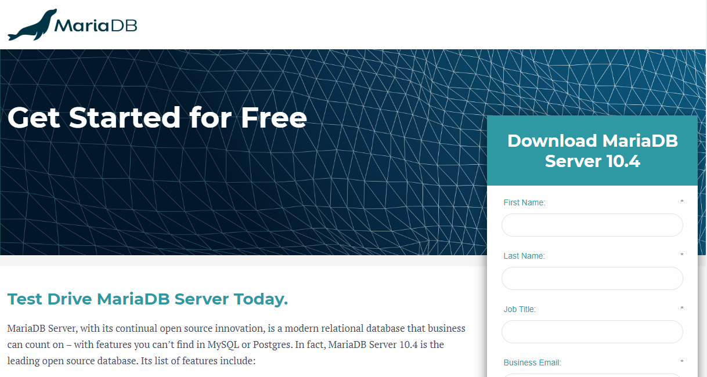
上のアドレスリンクで接続すればNameや様々な情報を入力してっていいますが、簡単に入力してDownloadを押下してダウンロードしましょう。
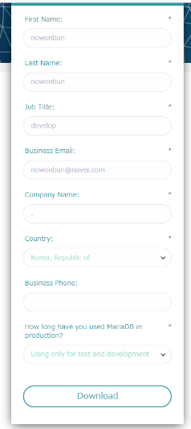
それならOSのVersionを選択してっていいますが、Window環境でインストールするからWindow64を選択してダウンロードします。
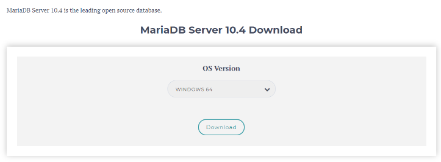
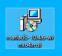
インストールファイルをダブルクリックしてインストールしましょう。
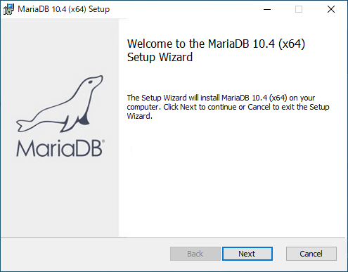
ライセンスの同意しましょう。
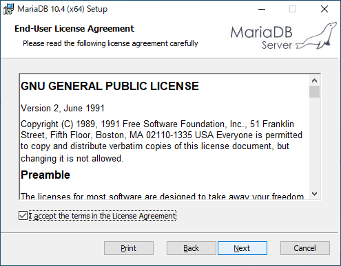
インストールするドライブを選択しましょう。
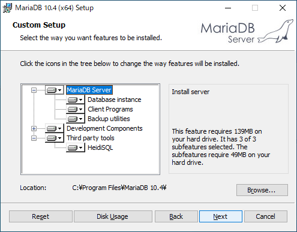
次は初期rootのidのパスワードを設定しましょう。
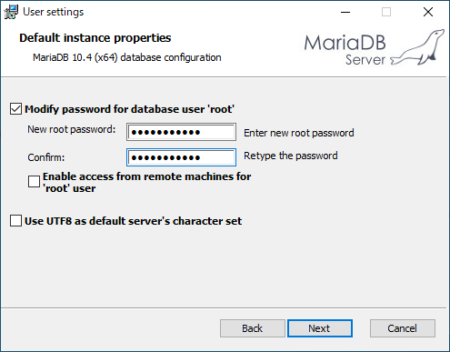
そしてservices.mscに表示するラベル名とポート設定ですが、特異事項がなければDefaultでNextボタンを押下しましょう。
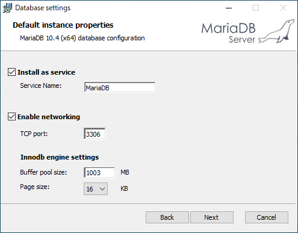
使用中でフィードバックを可否ですが、チェック解除してNextボタンを押下しましょう。
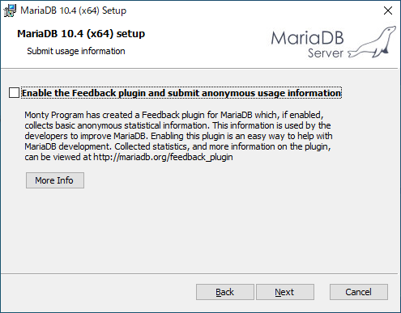
これからinstallが始まります。
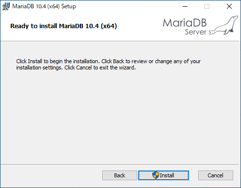
インストールが完了すればスタートメニューでMariaDBフォルダが生成されます。
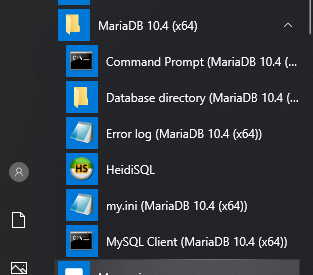
この中でMysql clientをクリックして接続します。
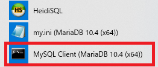
そしてmysqlデータベースで接続してuser情報を確認しましょう。
-- 接続データベース変更
use mysql;
-- ユーザ情報検索
select host, user, password from user;
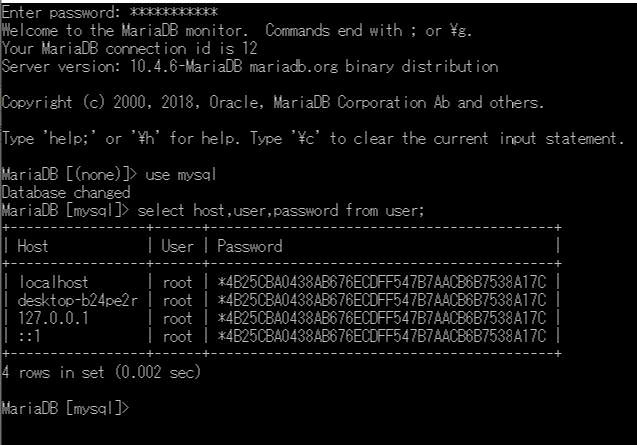
そしてユーザを一つ生成して権限を与えます。
-- nowonbunのidに接続ホストはすべてのことでIDを生成した。
-- 外部から接続しないようには'%'代わりにlocalhostを入れればよい。
create user 'nowonbun'@'%' identified by 'a12345';
-- すべて権限を与えます。
grant all privileges on *.* to 'nowonbun'@'%';
-- 更新
flush privileges;
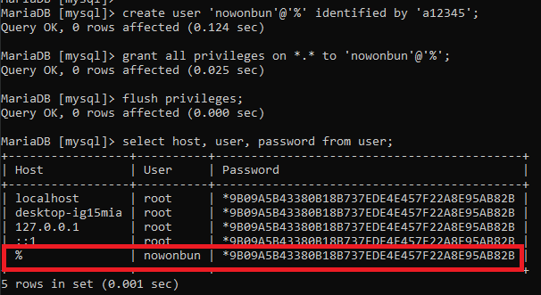
これでSql queryブラウザを利用して接続しましょう。
私の場合はDbeaverというブラウザを使います。
link - [Tools] Dbeaver(無料Sql queryブラウザツール)
プログラムで新しい接続コネクションを生成しましょう。
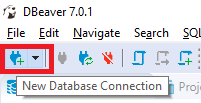
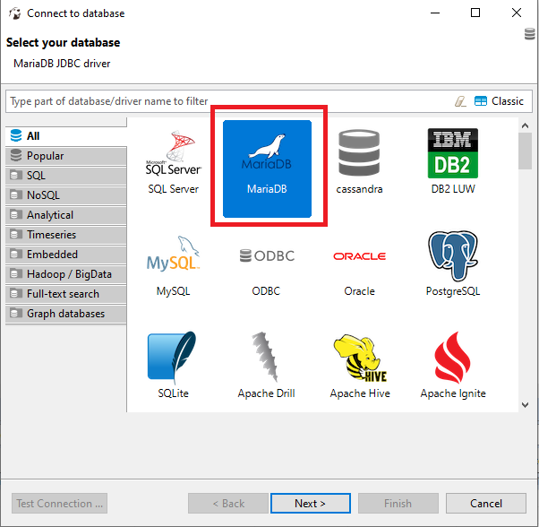
接続するデータベースを選択して接続情報を入力しましょう。
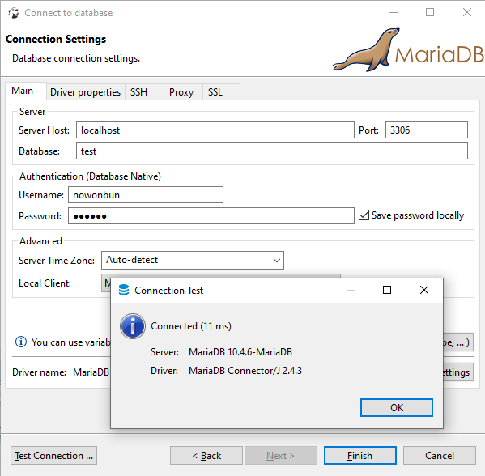
Test Connectionで接続できることを確認できます。
簡単な例でqueryを作成してしっかり作動するかを確認しましょう。
-- 接続データベース変更
use test;
-- テーブル生成
create table test (
idx bigint auto_increment, -- インデックスを自動増加設定
contents varchar(200), -- データ
primary key(idx) -- 主キー設定
)
-- データ入力
insert into test (contents) values('hello world');
-- 検索
select * from test;

検索までできることを確認しました。
ここまでWindowでMariaDBをインストールする方法に関する説明でした。
ご不明なところや間違いところがあればコメントしてください。
- [Java] 41. Web Spring webframeworkのControllerからajaxの要請する時、jsonタイプのデータを返却する方法2019/10/04 19:24:43
- [Java] 40. Web Spring frameworkでControllerを扱う方法2019/10/03 20:02:06
- [Java] 39. Spring Web Frameworkを利用してウェブサービスプロジェクトを作成する方法2019/10/02 21:00:22
- [Java] 38. Javaでウェブサービスプロジェクト(JSP Servlet)を作成する方法2019/10/01 21:48:08
- [Java] 37.イクリプス(eclipse)でトムキャット(tomcat)を設定する方法2019/09/30 22:19:34
- [Java] 36.コーディングする時、よく使うコーディングパターンとステップ数を減らす方法2019/09/27 20:39:09
- [Java] 35. コーディング規約設定(Google Standard coding style)2019/09/26 21:31:25
- [Java] 34. WindowでMariaDBをインストールする方法2019/09/25 19:58:30
- [Java] 33. オープンライブラリを参照する方法(eclipseからmavenを連結)2019/09/24 19:35:54
- [Java] 32. Reflection機能を使う方法(Annotation編)2019/09/24 00:19:25
- [Java] 31. Reflection機能を使う方法(Variable編)2019/09/20 22:34:40
- [Java] 30. Reflection機能を使う方法(Method編)2019/09/19 20:20:10
- [Java] 29. Reflection機能を使う方法(Class編)2019/09/18 20:02:14
- [Java] 28. 文字タイプ(CharacterSet)とエンディアン(endian)で変換する方法2019/09/17 20:22:02
- [Java] 27. ネットワーク通信(Socket)をする方法2019/09/16 23:42:46
- [Java] WebSocketでチャット履歴をローディングする方法2021/06/15 18:34:45
- [Java] WebSocketを利用してユーザ(サイト運用者)が他のユーザとチャットする方法2021/06/15 17:20:08
- [Design pattern] 1-2. ビルダーパターン(Builder pattern)2021/06/11 19:06:28
- [Design pattern] 1-1. シングルトンパターン(Singleton pattern)2021/06/09 19:40:05
- [Design Pattern] デザインパターンの紹介2021/06/08 20:42:36
- [Tools] Dbeaver(無料Sql queryブラウザツール)2021/04/28 18:26:49
- [Bootstrap] HTMLデザインのフレームワークのBootstrap紹介2020/07/30 19:06:36
- [Python] メール(smtplib)を送信する方法2020/07/27 18:38:43
- [Python] HttpConnection(requestsモジュール)でウェブサーバーで接続する方法2020/07/20 14:41:51
- [Python] Excel(openpyxl)を扱う方法2020/07/16 16:40:31
- [Python] ファイル圧縮、解凍(zipfile)する方法2020/07/14 19:14:22
- [Python] Apache cgiでPythonを使う方法2020/07/09 19:58:19
- [Python] Web serverを起動する方法(http.server)2020/07/09 00:13:13
- [Python] WebSocketを使う方法2020/07/07 17:29:18
- [Python] PythonとJavaのソケット通信する方法2020/07/03 18:35:50